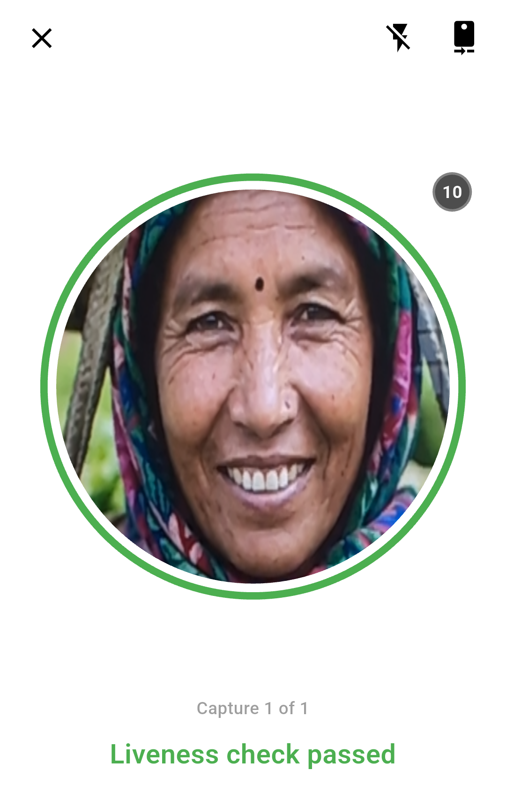
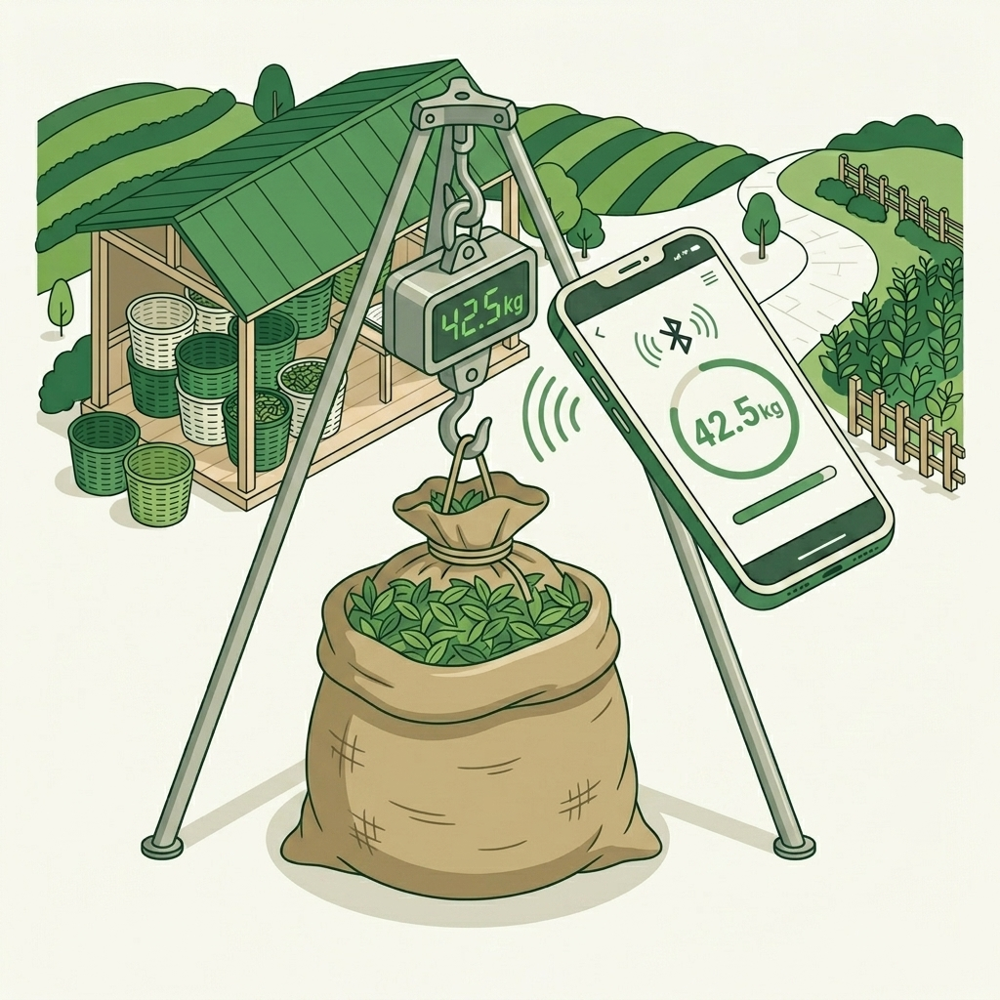
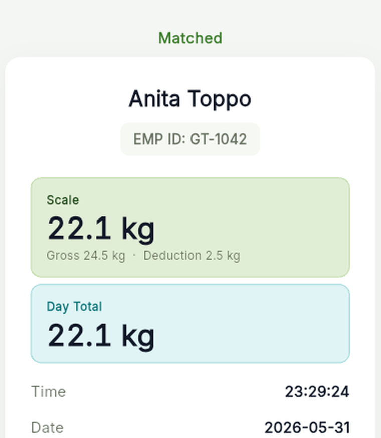
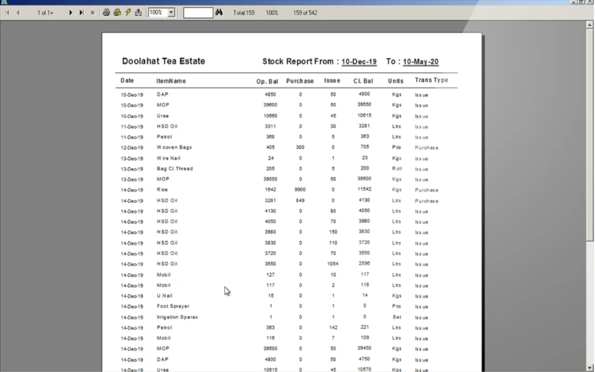
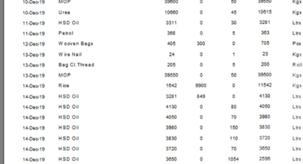
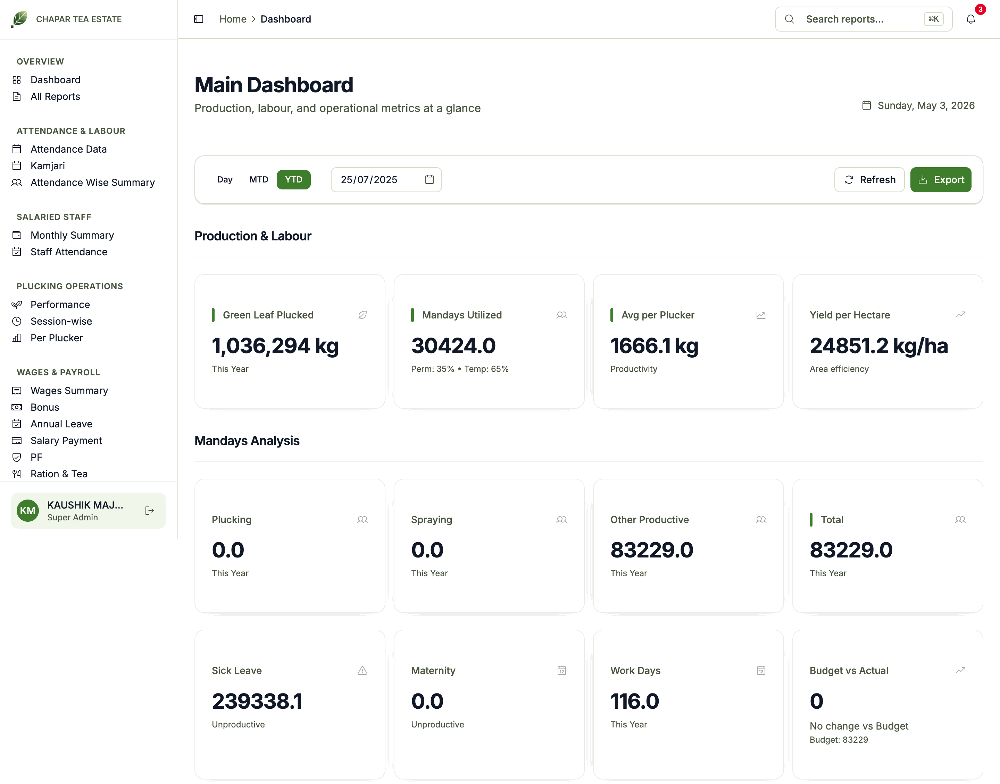

GardenSuite Operations - Executive BrochurePrint / Export: Cmd+P > Save as PDF
GardenSuite
Full Operations Brochure - 2026
Built for tea gardens
Complete operations system for tea garden management.
Biometric face attendance, smart Bluetooth scale weighment, and complete offline estate accounting. From field leaf to office ledger.
25+Years in tea gardens
20+Estate clients
100%Offline field engine
CloudMIS dashboard
Built and maintained by Sarbani Associatesgardensuite.in
GardenSuite
02 / 10 - The Moat
Domain architecture
Why generic software fails in tea gardens.
Tea plantations operate in remote valleys with zero network and complex task math. Standard software breaks down in the field. GardenSuite is built from the bush up.
100% offline field resilience
Deep tea sections in Dooars, Terai, and Assam have zero cellular coverage. SQLite on-device engine records all face scans and weighments locally with zero stalling. Data syncs in 60 seconds when back in range of office Wi-Fi.
Face biometrics coupled to weight
Certified Bluetooth scale hook transmits gross and tare weight directly to the worker's verified face scan. Completely eliminates handwritten paper chits, delayed clerical transcription, and proxy plucker fraud.
Native tea garden mathematics
Built-in computation for daily task hazira (24 kg standard), over-plucking incentives (rate/kg), basket tare deductions, moisture water cuts, and statutory 12% garden PF without error-prone Excel sheets.
Direct on-ground Siliguri support
We are based at Bagdogra and Siliguri, right beside the tea belts. Our hardware engineers visit your estate in person for scale pairing, biometric enrollment, calibration, and on-site boidar training.
OneMoat
Engineered for tea plantation reality. Zero reliance on continuous cloud internet in the section, zero manual paper chits, and automatic estate compliance.
Fast on-device face verification stops buddy punching and ghost workers. Works offline in morning mist, direct sun, or shade.
Sub-2-second match - mathematical vector recognition runs locally on Android phones without cloud lag.
Liveness check passed - verifies real worker presence and stops photo or proxy punching.
Section & job allocation - assign pluckers to division, section, and specific work code instantly.
Privacy & encryption - only mathematical embeddings stored; no raw biometric photos saved.

Offline vector engine
Mathematical face embeddings match in under 2 seconds on standard Android phones with zero cellular signal.
Active liveness check
Depth and motion verification confirms real worker presence, stopping printed photos or proxy buddy punching.
Section muster allocation
Assigns pluckers to division, section, kam, and boidar code right at 06:30 AM before picking up baskets.
2 SecSpeed
Instant morning muster roll. Workers are verified and allocated to their sections before picking up their baskets, eliminating paper rolls.
Field face attendance03
GardenSuite
04 / 10 - Smart Weighing


Anita Toppo (GT-0205)
Net 22.1 kg (Gross 24.5 - Tare 2.4)
Precision harvest
Leaf weight linked directly to verified face.
Plucking leaf weight transmits wirelessly from the hanging scale to the Android app. No handwritten chits or manual typing errors.
Wireless BLE 5.0 hook - weight locks automatically on the app screen in seconds.
Automatic tare deduction - preset bag weight and moisture allowance subtracted on the spot.
Worker day total - pluckers hear and verify their cumulative day plucking weight immediately.
Tamper-proof record - plucker face, timestamp, and net kilograms sealed atomically.
BLE 5.0 wireless hook
Transmits certified net leaf weight straight from the hanging scale to the supervisor phone in 1 second.
Automatic tare & water cut
Preset bag tare (2.4 kg) and rainfall moisture allowance are subtracted on the spot without manual arithmetic.
Voice day-total broadcast
The Android app speaks the worker cumulative day plucking weight aloud for clear, dispute-free verification.
ZeroPaper Chits
Direct scale-to-phone data capture. Stops leaf weight manipulation, handwritten chit errors, and delayed weighment transcription.
Smart Bluetooth weighing04
GardenSuite
05 / 10 - Daily Workflow
5-step operational cycle
From morning muster to cloud MIS in 5 steps.
A proven daily routine followed across 20+ tea estates in North Bengal and Assam.
01
Morning Hazira Verification
Workers scan their face at field muster stations. Biometric match runs locally on Android phones in under 2 seconds. Section, muhuri, and task job codes are allocated immediately.
06:30 AMZero Proxy
02
Smart Bluetooth Leaf Weighment
Midday and evening leaf weighment at section collection points. Weight transmits wirelessly from hanging scale hook directly into the worker's open attendance record.
11:30 AM / 03:30 PMDirect BLE
03
60-Second Estate Office Sync
Supervisor brings mobile phone within range of the estate office local Wi-Fi. All face transactions and leaf weights transfer directly to the desktop database server in seconds.
05:00 PMOffline First
04
Automated Kamjari & Task Costing
Garden office runs daily kamjari with one click. Daily plucking task (24 kg), over-plucking rates, bag tare deductions, and moisture allowances calculate automatically without clerical spreadsheets.
05:30 PMOne-Click Run
05
Executive Cloud MIS & Statutory Pay
Daily harvest totals upload securely to the management cloud dashboard for owners and visiting agents. Fortnightly wages, PF ECR files, and pay slips are compiled ready for bank disbursement.
06:00 PMManagement Cloud
5Steps
Complete operational transparency. Field leaf balances with factory gate intake before the evening shift ends, eliminating unexplained leaf shrinkage.
Field-to-office daily workflow05
GardenSuite
06 / 10 - Kamjari & Wages
Estate accounting
Daily kamjari and statutory wages in minutes.
One-click calculation for basic task hazira, over-plucking incentives, and garden payroll without clerical spreadsheets.
Audited estate figures - 870,535 kg green leaf, 32,435 mandays, ₹2.20 Cr wages processed.
Leaf reconciliation - gross, tare, and net weighbridge intake balanced against plucking collections.
CTC made tea outturn - track recovery percentage across BOP, BP, OF, and PD grade assortments.
GST despatch invoices - automated buyer sale challans, road transit forms, and audit registers.
Store stock & consumption
Purchase register, supplier bills, and section-wise requisitions for fertilizers (Urea, MOP, DAP), fuel (HSD, Petrol), and weekly worker ration distribution.


Section Requisitions
MOP, Urea, HSD Oil, Petrol
Fertilizers & agrochemicals - section requisitions for Urea, MOP, DAP, and foliar sprays.
Fuel & genset registers - diesel (HSD) and petrol consumption logs for factory machinery and tractors.
Worker ration distribution - weekly ration issues (wheat, rice, tea) with automatic wage deductions.
100%Traceability
Full estate audit trail. Every kilogram of green leaf is reconciled from bush to weighbridge, withering, made tea packing, and GST despatch.
Factory production and store inventory07
GardenSuite
08 / 10 - Cloud MIS
Executive visibility
Estate figures on your phone, anywhere in the world.
Offline reliability at the garden office, with secure cloud viewing for directors, owners, and visiting agents.
View from anywhere - access live daily harvest, labour, and factory data from phone, tablet, or laptop.
Executive metrics - season-to-date leaf harvest (1,036,294 kg), plucking averages, and yield per hectare.
Multi-garden overview - estate groups can compare performance across multiple gardens under one login.
Local data sovereignty - garden office retains full offline master data; cloud receives read-only summaries.

Yield per hectare
Compare section-wise green leaf productivity, plucking rounds, and bush health across your entire estate.
Multi-garden view
Company directors monitor multiple estates across Assam and Bengal under one centralized, secure management login.
Data sovereignty
The garden office maintains 100% offline master records; the cloud dashboard receives encrypted read-only summaries.
DailyMIS
Best of both worlds. Estate operations run 100% reliably on local office PC without internet dependencies, while management enjoys real-time cloud visibility.
Cloud MIS dashboard08
GardenSuite
09 / 10 - Rollout & Heritage
Proven implementation
25+ years supporting tea estates across North Bengal & Assam.
Built and maintained by Sarbani Associates (Bagdogra, Siliguri). Serving 20+ tea estates since 2000.
Phase 1: Estate survey
Review weighment points, muster locations, task wage formulations, and hardware requirements with management.
Phase 2: Hardware setup
Install local garden office server, pair certified Bluetooth hanging scales, and configure automated backups.
Phase 3: Worker enrollment
Register plucker face vectors and employee codes on site. Calibrate scale bag deduction and moisture allowances.
Phase 4: Parallel run & training
On-ground coaching for supervisors, boidars, and clerks. Final daily kamjari produced within 7 days of installation.
Local technical presence. Sarbani Associates team in Bagdogra and Siliguri is always within driving distance for on-ground visits. Many estates keep software details private.
Rollout methodology and heritage09
GardenSuite
10 / 10 - Contact
Book an on-estate demo
See face attendance and smart weighing live on your garden.
We bring the hardware to your estate, run a live section weighment demonstration with your own pluckers, and produce your daily kamjari report on site.
We bring the hardware
Smart Bluetooth hanging scale hook, Android phones, and mobile field printer brought directly to your estate.
Test with your pluckers
Enroll 20 of your pluckers in 5 minutes and run a live weighment session right at your section weighment point.
Instant estate kamjari
Watch the trial weighments sync to the office computer and calculate into mandays and wages in under 15 minutes.
+91 97341 01330
sarbaniassociates@gmail.com
gardensuite.in
Direct contact: Kaushik Majumder • Sarbani Associates, Bagdogra & Siliguri, West Bengal.
Serving tea estates across Assam, Dooars, Terai, Darjeeling, Coochbehar, Uttar Dinajpur, and Jalpaiguri.

 GardenSuite
GardenSuite